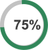

CSS3
HTML5
JS
The Eatright website was centered around design. I spent my time creating interfaces in Photoshop that I would later collaborate with a content editor, web manager and another developer on. I went through several design renditions before landing on an interface suitable for one of the sections of the website. After nailing down a design I began work in CSS and HTML for the implementation.